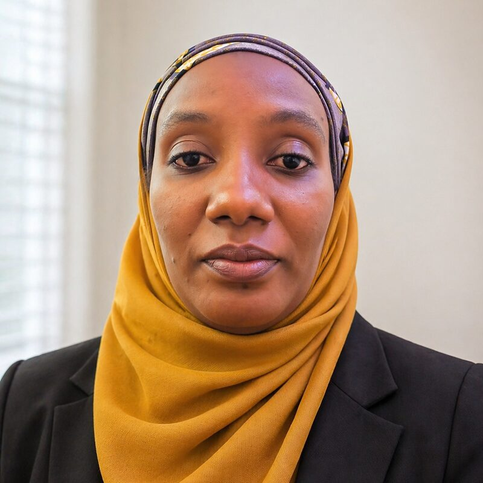

Leadership & Advisory Team

Leads Project TEDxAfrica's mission to curate 100 milestone African stories by 2036. Alongside his work with Al Jazeera in investigative research and strategic communications, he coaches founders and executives on clarifying ideas and delivering their first TEDx talks.
LinkedInAward-winning author, TEDx speaker, and former Senior Probation Officer whose career spans criminal justice, literature, and global advocacy. She provides strategic leadership in curating platforms that amplify African voices on the world stage.
LinkedInGovernance and cybersecurity expert with over two decades of experience across Fortune 100 companies, academia, and regulated industries. She helps organisations build accountability and structure before risk becomes costly failure.
LinkedInOrganisational psychologist and culture influencer who builds workplaces where people learn, grow, and thrive. She has led talent attraction, development, and retention programmes that strengthen organisational performance.
LinkedInCore Team
Education leader with over 12 years building purpose-driven school systems across Africa. She designs Project TEDxAfrica's post-event engagement ecosystems, connecting speakers and alumni long after the stage lights fade.
LinkedIn
Certified management consultant and development practitioner with a PhD in Educational Administration and Planning. She leads impact measurement and research, using evidence-based insight to strengthen programme outcomes.
Clarity and confidence coach who has helped build a multi-million-worth personal and corporate brand and guided 25+ founders toward clarity and visibility. She leads financial direction for the platform.
LinkedInFounder of Apps and Scripts Technologies and WISSA, with a multidisciplinary background spanning product management, cybersecurity, and digital strategy. She leads creative and content direction for the platform.
LinkedInArchitect and public speaker with over a decade supervising infrastructure projects across Nigeria. As Hospitality Team Lead, she orchestrates seamless on-ground operations, venue coordination, and the speaker experience.
LinkedInComputer engineer and UI/UX specialist who has contributed to the federal 3MTT programme and the National Centre for Artificial Intelligence and Robotics. As Head of Operations, she coordinates logistics and partnerships across the platform.
LinkedIn